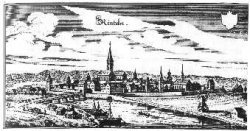

Schaumburg im 16. und 17. Jahrhundert - Kulturelle Blüte und Wandel mit langfristigen Folgen
 Stadtansicht von Rinteln, 1647 (Mattheus Merian)
Die Reformation wurde 1559, also vergleichsweise spät, unter dem Grafen Otto IV. (1544-1576) eingeführt, der zunächst auf der katholischen Seite stand. Otto hatte in Löwen studiert, war 1531-1537 Bischof von Hildesheim und beteiligte sich auf der Seite Spaniens am Krieg gegen Frankreich, ehe er sich 1558 in zweiter Ehe mit Elisabeth Ursula zu Braunschweig und Lüneburg, einer Tochter Herzogs Ernst, des Bekenners, vermählte. Unter ihrem Einfluss wurde in Schaumburg die evangelische Lehre eingeführt. Die beiden Klöster Obernkirchen und Fischbeck blieben als evangelische Damenstifte bis heute bestehen.Ihren kulturellen Höhepunkt erlebte die Grafschaft unter Ottos Sohn Ernst (1601-1622). Ernst war 1569 in Bückeburg geboren, in Detmold am Hofe Simons VI. zur Lippe aufgewachsen, hatte in Helmstedt Rechtswissenschaften studiert, sich in Kassel am Hofe des hochgelehrten Landgrafen Moritz aufgehalten und auf Bildungsreisen durch halb Europa Kunst und Kultur Italiens und der Niederlande kennengelernt. Zur Frau nahm er die Schwester des Landgrafen Moritz, Hedwig. Von hervorragenden Männern beraten, sanierte er die Landesfinanzen, führte das Land zu wirtschaftlicher Blüte und ordnete es neu. 1606 verlegte er die Haupt-Residenz von Stadthagen nach Bückeburg, das er entsprechend seinen hohen Plänen und Ansprüchen ausbaute. Der Goldene Saal mit seiner Götterpforte beeindruckt noch heute jeden Bückeburger Schlossbesucher durch seinen Glanz; auch die Stadtkirche und die Anlage des Marktplatzes mitsamt angrenzenden Gebäuden gehen auf den Grafen Ernst zurück. Das Mausoleum in Stadthagen von Giovanni M. Nosseni und seine bedeutenden Skulpturen von Adrian de Vries, das akademische Gymnasium in Stadthagen und die Universität Rinteln sind von ihm ins Werk gesetzt worden. Er gab dem Land eine Polizei- (1615) und eine Kirchenordnung (1614), die teilweise bis weit ins 19. Jahrhundert hinein gültig blieben. Seine Geldmittel, die großenteils aus dem Schaumburger Bergbau stammten, reichten auch für ein größeres Darlehen, das er dem Kaiser zur Verfügung stellte. Zum Dank wurde Graf Ernst 1619 in den Fürstenstand erhoben.
Die Universität Rinteln wurde 1621 mit kaiserlichem Privileg gegründet. Die Ausstattung reichte zunächst für zwölf Professoren und einige zig Stipendien. Nach erfolgversprechendem Auftakt erlebte sie bereits 1622 einen jähen Einbruch durch den Tod ihres Gründers und die Wirren des 30jährigen Kriegs. Sie gehörte mit gewöhnlich zirka 150 Studenten zu den kleineren Universitäten; ihr räumlicher Einzugsbereich beschränkte sich auf die nähere bis weitere Umgebung Nordwestdeutschlands.
Unter den akademischen Lehranstalten blieb ihr Ruf im ganzen eher bescheiden. So gab es nur wenig Protest, als sie im Jahre 1810 aufgehoben und ihre Güter der Universität Marburg einverleibt wurden; das Archiv wurde weitgehend vernichtet. Die Universitätsgebäude wurden abgerissen, an ihrer Stelle das Gymnasium "Ernestinum" errichtet.
Als Fürst Ernst am 21. März 1622 in seinem Mausoleum in Stadthagen beigesetzt wurde, zogen Truppen der kaiserlichen Liga gegen den "tollen" Herzog Christian von Braunschweig und Lüneburg durch das Wesertal; der 30jährige Krieg hatte Schaumburg erreicht. Wie ganz Deutschland litt die Bevölkerung unter Einquartierungen, Erpressung und Brandschatzung; Pest und Mangel taten ein übriges. Wieder und wieder wurde das Wesertal als Durchzugs- und Aufmarschgebiet genutzt. Eine der wenigen großen Schlachten fand am 28. Juni 1633 bei Hessisch Oldendorf statt; sie endete für die evangelische Partei siegreich, ohne jedoch einen wesentlichen Einfluss auf den weiteren Verlauf des Krieges zu nehmen.
Fürst Ernst war kinderlos gestorben. Das Erbe trat die Gemener Linie des Schaumburger Grafenhauses an. Graf Otto V. nahm 1640 an einem Kriegsrat der evangelischen Partei in Hildesheim teil, als den Teilnehmern bei einem Gastmahl, wie es heißt, Gift untergemischt wurde. Jedenfalls verstarb Graf Otto V. wenige Tage nach seiner Rückkehr aus Hildesheim am 15. November 1640 und mit ihm der letzte männliche Schaumburger. Mit seinem Tod fand die "Alte Grafschaft Schaumburg" ihr Ende. Das Erbe stand zur Aufteilung an. Ottos Mutter Elisabeth, Tochter Simons VI. zur Lippe, übertrug alle Rechte ihrem Bruder Philipp. Die auswärtigen Beziehungen fielen weg: Die Grafschaft Pinneberg und die Herrschaft Bergen wurden verkauft, die Herrschaft Gemen fiel an die Grafen von Limburg, die verpfändete Grafschaft Sternberg an Lippe. Auf die Stammlande an der Weser erhoben mehrere Parteien Anspruch: Braunschweig-Lüneburg zog das Amt Lauenau, die Vogtei Lachem, Mesmerode und Bokeloh sowie Wiedensahl als erledigtes Lehen ein; lehnsrechtliche Ansprüche machten auch die Landgrafschaft Hessen-Kassel und das Fürstbistum Minden geltend, erbrechtliche Ansprüche die Grafen zur Lippe. Es kam zur Teilung der alten Grafschaft Schaumburg in zwei gleichwertige Hälften: Die Grafen zur Lippe (Nebenlinie Alverdissen) erhielten die Ämter Arensburg, Bückeburg, Stadthagen Hagenburg und die Hälfte des Amtes Sachsenhagen; Hessen erhielt die Ämter Rodenberg und Schaumburg und die südliche Hälfte des Amts Sachsenhagen. Gemeinschaftlich blieben der Besitz der Universität Rinteln (bis 1665), der Weserzölle (bis 1734) und der Bergwerke (bis ins 20. Jh.). Das von den Schweden beherrschte Minden ging am Ende leer aus. In mehreren Verträgen wurde diese Regelung 1647 und in Artikel XV des am 14./24. Oktober 1648 zwischen Kaiser und Schweden abgeschlossenen Westfälischen Friedensvertrages abschließend besiegelt.